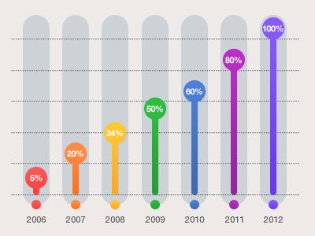
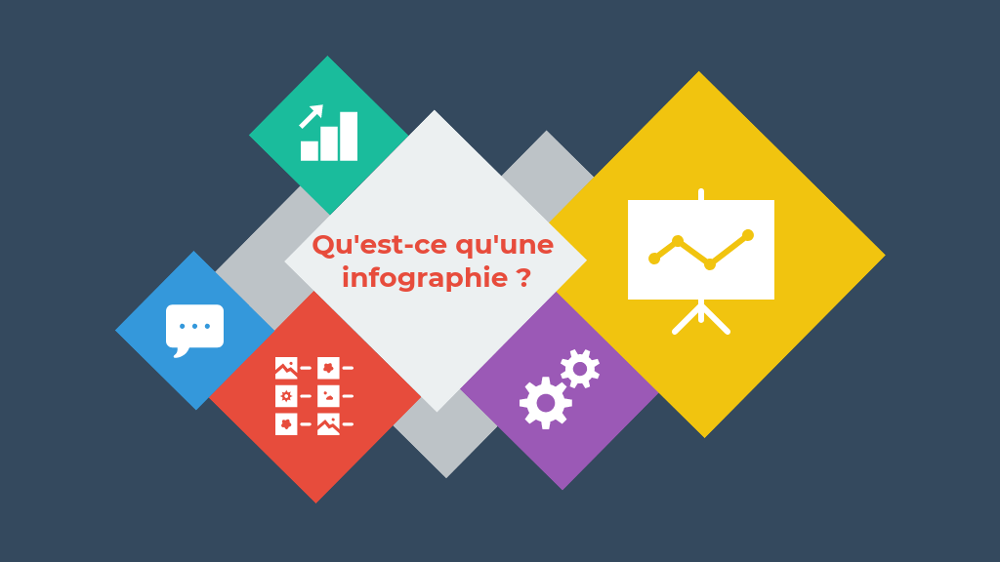

.png)
.png)
.png)
.png)
.png)
Définition :
L'infographie est une représentation visuelle d'informations, de données ou de connaissances. Elle utilise des éléments graphiques tels que des graphiques, des diagrammes, des icônes et du texte pour communiquer de manière concise et claire. L'objectif principal de l'infographie est de simplifier des concepts complexes et d'aider les gens à comprendre rapidement l'information présentée.
Qu'est-ce que l'infographie ?
L'infographie est une forme de communication visuelle qui combine des éléments visuels et des informations pour transmettre un message de manière visuellement attrayante et efficace. Elle est utilisée dans de nombreux domaines tels que le journalisme, le marketing, l'éducation et les présentations professionnelles. Les infographies peuvent prendre différentes formes, telles que des graphiques, des tableaux, des diagrammes, des cartes, des timelines, des illustrations, etc.
L'infographie dans le journalisme :
L'infographie est devenue un outil essentiel dans le domaine du journalisme pour présenter des informations complexes de manière visuellement attrayante et facilement compréhensible. Les journalistes utilisent des infographies pour donner vie aux histoires, pour présenter des données et des statistiques de manière claire et pour simplifier des concepts complexes pour les lecteurs.
En utilisant l'infographie dans le journalisme, les journalistes peuvent rendre les informations plus accessibles, intéressantes et engageantes pour les lecteurs. Cela leur permet de transmettre des histoires et des informations de manière efficace, tout en aidant le public à comprendre les sujets complexes et à prendre des décisions éclairées.
L'infographie dans le marketing :
L'infographie est un outil puissant dans le domaine du marketing pour communiquer des informations complexes de manière visuellement attrayante et facilement compréhensible. Les spécialistes du marketing utilisent les infographies pour présenter des données, des faits et des idées d'une manière engageante qui capte l'attention du public cible.
En utilisant l'infographie dans le marketing, les spécialistes peuvent captiver l'attention du public, présenter des informations clés de manière visuellement attrayante et stimuler l'engagement et l'interaction avec la marque. Cela aide à promouvoir les produits.
L'infographie dans l'éducation :
L'infographie est un outil puissant dans le domaine de l'éducation pour présenter des informations complexes de manière visuellement attrayante et facilement compréhensible. Les enseignants utilisent les infographies pour rendre l'apprentissage plus visuel, interactif et engageant pour les élèves.

En utilisant l'infographie dans l'éducation, les enseignants peuvent rendre l'apprentissage plus interactif, visuel et engageant pour les élèves. Cela facilite la compréhension des concepts complexes, favorise la mémorisation, stimule l'apprentissage actif et développe les compétences de communication des élèves.
L'infographie dans la recherche :
L'infographie joue un rôle important dans le domaine de la recherche en permettant de présenter des données, des résultats et des concepts complexes de manière visuellement attrayante et facilement compréhensible. Les chercheurs utilisent les infographies pour communiquer leurs travaux de manière efficace, aider à la visualisation des données et faciliter la compréhension des résultats.
Il est important de noter que la création d'infographies pour la recherche nécessite une compréhension approfondie des données et des résultats, ainsi que des compétences en communication visuelle. Les chercheurs doivent s'assurer que les infographies présentent les informations de manière précise et claire, en évitant les erreurs d'interprétation ou de simplification excessive.
En résumé, l'infographie est un outil précieux dans le domaine de la recherche, permettant de présenter des données, des résultats et des concepts complexes de manière visuellement attrayante et facilement compréhensible. Les infographies facilitent la communication des découvertes scientifiques, aident à visualiser les données, simplifient les concepts et favorisent la diffusion des connaissances. L'utilisation stratégique de l'infographie dans la recherche contribue à une meilleure compréhension et à une plus grande diffusion des travaux de recherche.
L'infographie dans la santé :
L'infographie est un outil précieux dans le domaine de la santé pour communiquer des informations médicales complexes de manière visuellement attrayante et facilement compréhensible. Elle est largement utilisée par les professionnels de la santé, les chercheurs et les organismes de santé pour éduquer, informer et sensibiliser le public sur divers sujets liés à la santé.
Il est important de noter que la création d'infographies dans le domaine de la santé nécessite une solide compréhension des concepts médicaux, ainsi que des sources d'information fiables et à jour. Les infographies doivent être précises, claires et basées sur des preuves scientifiques afin d'assurer la diffusion d'informations correctes et utiles.

En résumé, l'infographie est un outil puissant dans le domaine de la santé, permettant de communiquer des informations médicales complexes de manière visuellement attrayante et accessible. Elle contribue à l'éducation des patients, à la sensibilisation à la santé, à la présentation de données, ainsi qu'à la promotion de campagnes de santé, améliorant ainsi la compréhension et la prise de décision éclairée en matière de santé.
L'infographie dans la finance :
L'infographie est un outil puissant dans le domaine de la finance pour communiquer des informations financières complexes de manière visuellement attrayante et facilement compréhensible. Elle est largement utilisée par les professionnels de la finance, les analystes et les institutions financières pour présenter des données, des tendances, des stratégies d'investissement et des concepts financiers.
En utilisant l'infographie dans le domaine de la finance, les professionnels peuvent présenter des données et des informations financières de manière visuellement attrayante, accessible et compréhensible. Cela contribue à une meilleure analyse, à une prise de décision plus éclairée et à une communication efficace des concepts financiers aux investisseurs, aux clients et au grand public.